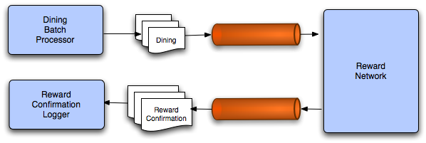

In this lab you will gain experience with Spring's JMS support.
You will complete an implementation of a DiningBatchProcessor that sends dining
event notifications to the reward network as messages. You will also configure a logger to receive the
reward confirmations asynchronously.
|  |
Figure 1: The batch processing of dining events with asynchronous messaging.
What you will learn:
How to configure JMS resources with Spring
How to send messages with Spring's JmsTemplate
How to configure a Spring message listener container
How to delegate Message content to a plain Java object
Specific subjects you will gain experience with:
JmsTemplate
The jms:xxx namespace
Estimated time to complete: 45 minutes
The instructions for this lab are organized into five sections. In the first section, you will establish the messaging infrastructure. In the second section, you will learn how to send dining notifications as messages. In the third and fourth sections, you will define and configure listeners to enable message reception by Message-Driven POJOs. In the final section, you will complete a test case to verify that the batch of dining notifications is successfully producing the corresponding confirmation messages.
In this section you will configure the necessary infrastructure to support the Reward Network in a messaging environment.
In JMS-based applications, the Connection is obtained from a ConnectionFactory.
Spring's JMS support will handle the resources, but it does require a ConnectionFactory
bean definition. In this step you will provide exactly that.
Open the jms-infrastructure-config.xml file in the rewards/jms
package. Provide a bean definition there (TODO 01) for an instance of
org.apache.activemq.ActiveMQConnectionFactory. Also provide a value for
the brokerURL property.
![[Tip]](images/tip.png) | Tip |
|---|---|
For this simple lab, you will be using an embedded broker with persistence disabled.
In ActiveMQ, the |
When you've done this, move on to the next step!
Now you will need to create two queues (TODO 02): one for handling dining notifications and the other for handling
the reward confirmations. Create two bean definitions of type org.apache.activemq.command.ActiveMQQueue
and call them "diningQueue" and "confirmationQueue". Provide a unique name for each queue using constructor injection.
You are now ready to move on to the next section.
In the previous section you configured a queue for dining notifications. In this section you will provide the necessary code to send dining notifications to that queue from a batch processor.
Navigate to the JmsDiningBatchProcessor within the rewards/jms/client package.
This class will be responsible for sending the dining notifications via JMS. Provide a field for an instance of Spring's
JmsTemplate (TODO 03) so that you will be able to use its convenience method to send messages.
Now complete the implementation of the processBatch(..) method (TODO 04) by calling the one-line
convenience method provided by the JmsTemplate for each Dining
in the collection.
![[Note]](images/note.png) | Note |
|---|---|
Here you can rely on the template's default message conversion strategy. The |
Open the client-config.xml within the rewards/jms/client package.
Define a bean definition for the JmsTemplate (TODO 05). Keep in mind that it will need a
reference to the ConnectionFactory as well as its destination.
Once you have defined the bean, inject it into the JmsDiningBatchProcessor that is already
defined in that same file. Then move on to the next section.
In the previous section you implemented the dining notification sending. In this section you will provide the necessary
configuration for receiving those messages and delegating their content to the RewardNetwork.
You will do this using Spring's JMS namespace that was introduced in Spring 2.5.
Open the jms-rewards-config.xml file within the rewards/jms package.
In this file you will provide the necessary bean definitions to configure the existing
RewardNetworkImpl as a Message-Driven POJO. No code modifications or new code
will be required.
First define a listener-container bean definition (TODO 06). The listener-container element
is defined in the JMS namespace and can be configured using a variety of attributes, such as the maximum amount
of concurrent listener, the transaction manager reference and the connection factory reference. The default for
the connection factory reference is connectionFactory and this is also the name of our connection
factory bean, so you don't necessarily have to specify this.
| Tip |
|---|---|
At this point, you might want to open the graph for the
|
Once you have configured the listener-container, move on to the next step.
Now that you have the container in place, you can start adding listeners to it. Each listener will have a corresponding
listener element defined inside the listener-container
element.
Define a listener for the RewardNetwork. The reference of the listener should be set to
rewardNetwork. The method also needs to be set (the method that will handle the reward request).
You also need to set the queue to which the listener is going to listen. Look up the name of the queue (remember: this is not the bean name)
in jms-infrastructure-config.xml and configure the destination attribute using this name.
Since the rewardAccountFor() method returns an object, we also need to specify the
response-destination property. Review the diagram above, lookup the queue name for the destination queue in
jms-infrastructure-config.xml and set the response-destination attribute of the listener element.
Now that you have configured the RewardNetworkImpl as a message-driven object, you are ready to
move on to the next section.
In the previous section, you configured the reward network to receive messages and also to reply automatically to a queue with reward confirmations. Now you will define another Message-Driven POJO so that those confirmations will be received and logged.
Open client-config.xml and define another jms:listener-container and
corresponding listener (TODO 07). This time, you should delegate to the confirmationLogger
bean that is already provided. Have a look at that class to determine the method name. Also notice that it is a
void method declaration so there is no need to provide a response destination this time.
At this point the messaging configuration should be fully established. It is now time to verify that configuration. Luckily a test case is already provided with all but two remaining tasks to complete.
Navigate to the DiningBatchProcessorTests in the rewards/jms/client
package in the src/test/java folder. Notice that the class makes use of Spring's support
for integration testing and that the diningBatchProcessor and confirmationLogger
fields will be automatically injected using the @Autowired annotation..
In the testBatch() method, a number of Dining objects are being
instantiated and added to a List. Here you simply need to invoke the method that you
implemented previously in the JmsDiningBatchProcessor class (TODO 08).
Finally, provide an assertion (TODO 09) to verify that the entire batch was sent and that the
confirmationLogger has received the same number of replies. If this assertion fails then
carefully read any exception messages, and work for the green bar.
| Tip |
|---|---|
If you are having trouble and not receiving any useful error messages, then first lower the log
level for |
Once you have the green bar, you have completed this lab. Congratulations!